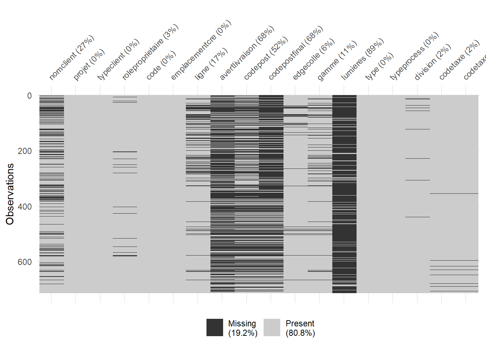

Rows: 714
Columns: 191
$ `$aNote` <chr> "false", "", "false", "false", "false"…
$ `$documSource` <chr> "false", "", "false", "false", "false"…
$ `$estCQ` <chr> "false", "", "false", "false", "false"…
$ `$estCQSup` <chr> "false", "", "false", "false", "false"…
$ `$estImport` <chr> "false", "", "false", "false", "false"…
$ `$estReprise` <chr> "false", "", "false", "false", "false"…
$ `$acompte1` <chr> "305.7440%", "PSD40%", NA, NA, NA, "33…
$ `$acompte2` <chr> "420.3955%", "PSD55%", NA, NA, NA, "45…
$ `$dateAcompte1Emis` <chr> "2023/08/30", NA, NA, NA, NA, NA, NA, …
$ `$fgfExclu` <chr> "false", "", "false", "false", "false"…
$ `$installExclu` <chr> "false", "", "false", "false", "false"…
$ `$matExclu` <chr> "false", "", "false", "false", "false"…
$ `$moExclu` <chr> "false", "", "false", "false", "false"…
$ `$pourcAcompte1` <chr> "0", "0", "0", "0", "0", "0", "0", "0"…
$ `$pourcAcompte2` <chr> "0", "0", "0", "0", "0", "0", "0", "0"…
$ `$solde` <chr> "764.35", "PSD", NA, NA, NA, "8307.06"…
$ `$transportExclu` <chr> "false", "", "false", "false", "false"…
$ `$appNotifObligs` <chr> "false", "", "false", "false", "false"…
$ `$appNotifs` <chr> "false", "", "false", "false", "false"…
$ `$codeClient2` <chr> "Avivia", NA, "Avivia", "Avivia", "Avi…
$ `$dateValidite` <chr> "2023/11/28", NA, NA, NA, NA, "2024/03…
$ `$delaiPrevExped` <chr> "2", "2", "2", "2", "2", "2", "2", "2"…
$ `$disclaimers` <chr> "", "", "", "", NA, "", "", "falsePris…
$ `$emplacementCre` <chr> "Interne", "Interne", "Externe", "Exte…
$ `$enErreur` <chr> "false", "", "false", "false", "false"…
$ `$enPSD` <chr> "false", "", "false", "false", "false"…
$ `$etapes` <chr> "dunintech2023/08/30ManufacturierSaisi…
$ `$identCour` <chr> "0", "0", "0", "0", "0", "0", "0", "0"…
$ `$nbJourValide` <chr> "90", "90", "90", "90", "90", "90", "9…
$ `$nomClient` <chr> "Avivia", NA, "Avivia", "Avivia", "Avi…
$ `$projet` <chr> "P-000175", "P-000181", "P-000219", "P…
$ `$promotions` <chr> "", "", "", "", "", "", "", NA, "", ""…
$ `$qteItems` <chr> "2", "4", "0", "0", "0", "10", "2", "2…
$ `$qteItemsCab` <chr> "1", "1", "0", "0", "0", "4", "1", "12…
$ `$roleProprietaire` <chr> "Employe", "Employe", "Client", "Clien…
$ `$sommairesKits` <chr> "k011Custom00346.43Contour000Plancher0…
$ `$sorte` <chr> "Comm", "Comm", "Comm", "Comm", "Comm"…
$ `$statutCJobsite` <chr> "false", "", "false", "false", "false"…
$ `$statutCred` <chr> "false", "", "false", "false", "false"…
$ `$type` <chr> "Regulier", "Regulier", "Regulier", "R…
$ `$typeProcess` <chr> "interne", "interne", "externe", "exte…
$ `$validCred` <chr> "true", "true", "true", "true", "true"…
$ ligne <chr> "Custom", "Custom", "Stock", "Eco", NA…
$ `$avertLivraison` <chr> "Cout_Livraison_Peut_Modif", NA, NA, N…
$ `$cleEnMain` <chr> "false", "", "false", "false", "false"…
$ `$codePost` <chr> "G0A1L0", NA, "G0A1L0", "G0A1L0", "G0A…
$ `$dateDebValidite` <chr> "2023-08-31true", NA, NA, NA, NA, "202…
$ `$installation` <chr> "false", "", "false", "false", "false"…
$ `$priseMesure` <chr> "falsepriseDeMesure", "nullpriseDeMesu…
$ `$typeClient` <chr> "particulier", "particulier", "particu…
$ assemblage <chr> "assemble", "assemble", "nonAssemble",…
$ edgeColle <chr> "pur", "pur", "pur", "pur", "pur", "pu…
$ gamme <chr> "gamme_3", "gamme_2", "gamme_1", "gamm…
$ `$ciClient` <chr> "0", NA, "0", "0", "0", "0", NA, NA, N…
$ `$cleItem` <chr> "24", "35", "7", "7", "1", "166", "25"…
$ `$courrielCharge` <chr> "malavoie@dunin.com", NA, NA, NA, NA, …
$ `$createurCourriel` <chr> "malavoie@dunin.com", "glebel@avivia.c…
$ `$createurNom` <chr> "Techdunin", "Ghislain", "client", "cl…
$ `$dateCreation` <chr> "2023/08/30", "2023/08/31", "2023/09/1…
$ `$division` <chr> "Division_1", "Division_1", "Division_…
$ `$documCree` <chr> "1", "1", "1", "1", "1", "1", "1", "1"…
$ `$memeCoordsJSCF` <chr> "false", "", "false", "false", "false"…
$ `$sauvegarde` <chr> "true", "true", "false", "false", "fal…
$ `$statutJobsite` <chr> "false", "", "false", "false", "false"…
$ `$code` <chr> "C-000089", "C-000093", "C-000115", "C…
$ `$codeTaxe` <chr> "TPS", "N/A", "TPS", "TPS", "TPS", "TP…
$ `$codeTaxe2` <chr> "TVQ", "N/A", "TVQ", "TVQ", "TVQ", "TV…
$ `$fuelExtra` <chr> "0", "", "0", "0", "0", "0", "0", "0",…
$ `$paletteNet` <chr> "0", "", "0", "0", "0", "0", "0", "0",…
$ `$pourcEsc` <chr> "18", "0", "18", "18", "18", "18", "0"…
$ `$pourcEscSup` <chr> "0", "0", NA, NA, NA, NA, "0", NA, "0"…
$ `$sousTotal` <chr> "346.43", "330.66", "0", "0", "0", "19…
$ `$tauxTaxe` <chr> "5", "0", "5", "5", "5", "5", "0", "5"…
$ `$tauxTaxe2` <chr> "9.975", "0", "9.975", "9.975", "9.975…
$ `$total` <chr> "764.35", "PSD", NA, NA, NA, "8307.06"…
$ `$totalHT` <chr> "664.8", "PSD", NA, NA, NA, "7225.1", …
$ `$totalTx1` <chr> "33.24", NA, NA, NA, NA, "361.26", NA,…
$ `$totalTx2` <chr> "66.31", NA, NA, NA, NA, "720.7", NA, …
$ `$transpCumul` <chr> "0", "", "0", "0", "0", "0", "0", "0",…
$ `$transpExtra` <chr> "0", "", "0", "0", "0", "0", "0", "0",…
$ `$transpJobSite` <chr> "0", "", "0", "0", "0", "0", "0", "0",…
$ `$transpNet` <chr> "0", "", "0", "0", "0", "0", "0", "0",…
$ `$avecLivraison` <chr> "true", "1", "1", "1", "1", "1", "1", …
$ `$cumulService` <chr> "0", "", "0", "0", "0", "0", "0", "0",…
$ `$cumulVolume` <chr> "4.36", "4.36", NA, NA, NA, "31.37", "…
$ `$pourcEscAutre` <chr> "0", "0", "0", "0", "0", "0", "0", "0"…
$ `$pourcEscCab` <chr> "0", "0", "0", "0", "0", "0", "0", "0"…
$ `$pourcEscComptoir` <chr> "0", "0", "0", "0", "0", "0", "0", "0"…
$ `$pourcEscMoulure` <chr> "0", "0", "0", "0", "0", "0", "0", "0"…
$ `$pourcEscPanel` <chr> "0", "0", "0", "0", "0", "0", "0", "0"…
$ `$sousTotalAutre` <chr> "0", "", "0", "0", "0", "0", "6.03", "…
$ `$sousTotalCab` <chr> "341.02", "297.37", "0", "0", "0", "15…
$ `$sousTotalComptoir` <chr> "0", "PSD", "0", "0", "0", NA, "0", "2…
$ `$sousTotalMoulure` <chr> "5.41", "11.86", "0", "0", "0", "17.29…
$ `$sousTotalPanel` <chr> "0", "21.43", "0", "0", "0", "6.87", "…
$ `$totalComptoirBois` <chr> "0", "", "0", "0", "0", "0", "0", "0",…
$ `$totalComptoirGranite` <chr> "0", "", "0", "0", "0", "0", "0", "0",…
$ `$totalComptoirQuartz` <chr> "0", "PSD", "0", "0", "0", NA, "0", "2…
$ `$totalComptoirStratifie` <chr> "0", "", "0", "0", "0", "0", "0", "0",…
$ `$totalEscAutre` <chr> "0", "", "0", "0", "0", "0", NA, NA, "…
$ `$totalEscComptoir` <chr> "0", "", "0", "0", "0", NA, "0", NA, "…
$ `$totalEscPanel` <chr> "0", NA, "0", "0", "0", NA, "0", NA, "…
$ `$totalLivraison` <chr> "318.37", "PSD", NA, NA, NA, "289.55",…
$ `$unit` <chr> "0", "", "0", "0", "0", "0", "0", "0",…
$ commandes <chr> "C-000089", "C-000093", "C-000115", "C…
$ `$sousTotal2` <chr> NA, "PSD", NA, NA, NA, "6935.55", "348…
$ `$ecartPrix` <chr> NA, "", NA, NA, NA, "false", "false", …
$ `$fraisPSD` <chr> NA, "PSD_LIV", NA, NA, NA, NA, "PSD_LI…
$ `$montantEcartPrix` <chr> NA, "", NA, NA, NA, "0", "0", "0", NA,…
$ `$sousTotal2_ClientFinal` <chr> NA, "PSD", NA, NA, NA, NA, NA, NA, NA,…
$ `$sousTotalComptoir_Dealer` <chr> NA, "PSD", NA, NA, NA, NA, NA, NA, NA,…
$ `$sousTotalService` <chr> NA, "PSD", NA, NA, NA, NA, NA, NA, NA,…
$ `$sousTotalServiceEsc` <chr> NA, "PSD", NA, NA, NA, NA, NA, NA, NA,…
$ `$sousTotal_Dealer` <chr> NA, "330.66", NA, NA, NA, NA, NA, NA, …
$ `$totalEscService` <chr> NA, "", NA, NA, NA, NA, NA, NA, NA, NA…
$ `$totalHT_CF` <chr> NA, "PSD", NA, NA, NA, NA, NA, NA, NA,…
$ `$total_CF` <chr> NA, "PSD", NA, NA, NA, NA, NA, NA, NA,…
$ `$sousTotal2Eff` <chr> NA, "330.66", NA, NA, NA, "2327.03", "…
$ `$sousTotalCabEff` <chr> NA, "297.37", NA, NA, NA, "1519.91", "…
$ `$sousTotalEff` <chr> NA, "330.66", NA, NA, NA, "1935.55", "…
$ `$sousTotalMoulureEff` <chr> NA, "11.86", NA, NA, NA, "17.29", "0",…
$ `$sousTotalPanelEff` <chr> NA, "21.43", NA, NA, NA, "6.87", "0", …
$ `$sousTotal_DealerEff` <chr> NA, "330.66", NA, NA, NA, NA, NA, NA, …
$ `$totalEscCab` <chr> NA, NA, "0", "0", "0", NA, NA, NA, "0"…
$ `$totalEscMoulure` <chr> NA, NA, "0", "0", "0", NA, "0", "0", "…
$ gammedesc <chr> NA, NA, NA, NA, NA, "gamme_desc_2true"…
$ `$escSup` <chr> NA, NA, NA, NA, NA, "0", "0", "0", NA,…
$ `$estBloqPrix` <chr> NA, NA, NA, NA, NA, "false", "false", …
$ `$sousTotalAutreEff` <chr> NA, NA, NA, NA, NA, "0", "6.03", "408.…
$ `$sousTotalComptoirEff` <chr> NA, NA, NA, NA, NA, "733.42", "0", "27…
$ `$totalComptoirBoisEff` <chr> NA, NA, NA, NA, NA, "0", "0", "0", NA,…
$ `$totalComptoirGraniteEff` <chr> NA, NA, NA, NA, NA, "0", "0", "0", NA,…
$ `$totalComptoirQuartzEff` <chr> NA, NA, NA, NA, NA, "733.42", "0", "27…
$ `$totalComptoirStratifieEff` <chr> NA, NA, NA, NA, NA, "0", "0", "0", NA,…
$ `$totalEscAutreEff` <chr> NA, NA, NA, NA, NA, "0", NA, NA, NA, "…
$ `$signatureValidation` <chr> NA, NA, NA, NA, NA, NA, "false", "fals…
$ `$memeCoordsJS` <chr> NA, NA, NA, NA, NA, NA, "false", "fals…
$ `$totalEscComptoirEff` <chr> NA, NA, NA, NA, NA, NA, "0", NA, NA, N…
$ `$totalEscMoulureEff` <chr> NA, NA, NA, NA, NA, NA, "0", "0", NA, …
$ `$totalEscPanelEff` <chr> NA, NA, NA, NA, NA, NA, "0", NA, NA, "…
$ `$installateur` <chr> NA, NA, NA, NA, NA, NA, NA, "particuli…
$ `$lumieres` <chr> NA, NA, NA, NA, NA, NA, NA, "PUCK79mm_…
$ `$ref1` <chr> NA, NA, NA, NA, NA, NA, NA, "cuisine 2…
$ `$codePostFinal` <chr> NA, NA, NA, NA, NA, NA, NA, "G0A1L0", …
$ `$cumulInstall` <chr> NA, NA, NA, NA, NA, NA, NA, "1199.77",…
$ `$fraisPDM` <chr> NA, NA, NA, NA, NA, NA, NA, "120", NA,…
$ `$totalInstall` <chr> NA, NA, NA, NA, NA, NA, NA, "1499.77",…
$ `$totalEsc` <chr> NA, NA, NA, NA, NA, NA, NA, NA, "0", N…
$ `$totalEscCabEff` <chr> NA, NA, NA, NA, NA, NA, NA, NA, NA, NA…
$ `$totalEscEff` <chr> NA, NA, NA, NA, NA, NA, NA, NA, NA, NA…
$ `$contratSource` <chr> NA, NA, NA, NA, NA, NA, NA, NA, NA, NA…
$ `$dateReqExped` <chr> NA, NA, NA, NA, NA, NA, NA, NA, NA, NA…
$ `$totalTx1_CF` <chr> NA, NA, NA, NA, NA, NA, NA, NA, NA, NA…
$ `$totalTx2_CF` <chr> NA, NA, NA, NA, NA, NA, NA, NA, NA, NA…
$ `$sousTotalComptoir_DealerEff` <chr> NA, NA, NA, NA, NA, NA, NA, NA, NA, NA…
$ `$dateAcompte1Recep` <chr> NA, NA, NA, NA, NA, NA, NA, NA, NA, NA…
$ `$courrielClient` <chr> NA, NA, NA, NA, NA, NA, NA, NA, NA, NA…
$ `$commentaires` <chr> NA, NA, NA, NA, NA, NA, NA, NA, NA, NA…
$ `$nomCharge` <chr> NA, NA, NA, NA, NA, NA, NA, NA, NA, NA…
$ `$telephoneCharge` <chr> NA, NA, NA, NA, NA, NA, NA, NA, NA, NA…
$ `$sousTotalAutre_Dealer` <chr> NA, NA, NA, NA, NA, NA, NA, NA, NA, NA…
$ `$sousTotalAutre_DealerEff` <chr> NA, NA, NA, NA, NA, NA, NA, NA, NA, NA…
$ `$totalEscComptoirBoisEff` <chr> NA, NA, NA, NA, NA, NA, NA, NA, NA, NA…
$ `$totalEscComptoirGraniteEff` <chr> NA, NA, NA, NA, NA, NA, NA, NA, NA, NA…
$ `$totalEscComptoirQuartzEff` <chr> NA, NA, NA, NA, NA, NA, NA, NA, NA, NA…
$ `$totalEscComptoirStratifieEff` <chr> NA, NA, NA, NA, NA, NA, NA, NA, NA, NA…
$ `$condition01` <chr> NA, NA, NA, NA, NA, NA, NA, NA, NA, NA…
$ `$condition02` <chr> NA, NA, NA, NA, NA, NA, NA, NA, NA, NA…
$ `$condition03` <chr> NA, NA, NA, NA, NA, NA, NA, NA, NA, NA…
$ `$condition04` <chr> NA, NA, NA, NA, NA, NA, NA, NA, NA, NA…
$ `$condition05` <chr> NA, NA, NA, NA, NA, NA, NA, NA, NA, NA…
$ `$condition06` <chr> NA, NA, NA, NA, NA, NA, NA, NA, NA, NA…
$ `$cumulCEM` <chr> NA, NA, NA, NA, NA, NA, NA, NA, NA, NA…
$ `$fraisSAV` <chr> NA, NA, NA, NA, NA, NA, NA, NA, NA, NA…
$ `$datePriseMesure` <chr> NA, NA, NA, NA, NA, NA, NA, NA, NA, NA…
$ `$emailPlanifEnvoi` <chr> NA, NA, NA, NA, NA, NA, NA, NA, NA, NA…
$ `$datePrevExped` <chr> NA, NA, NA, NA, NA, NA, NA, NA, NA, NA…
$ `$totalCEM` <chr> NA, NA, NA, NA, NA, NA, NA, NA, NA, NA…
$ `$specsPortes` <chr> NA, NA, NA, NA, NA, NA, NA, NA, NA, NA…
$ `$nomClientFin` <chr> NA, NA, NA, NA, NA, NA, NA, NA, NA, NA…
$ `$prenomClient` <chr> NA, NA, NA, NA, NA, NA, NA, NA, NA, NA…
$ `$telephoneClient` <chr> NA, NA, NA, NA, NA, NA, NA, NA, NA, NA…
$ `$dateAppClient` <chr> NA, NA, NA, NA, NA, NA, NA, NA, NA, NA…
$ `$dateAcompte2Emis` <chr> NA, NA, NA, NA, NA, NA, NA, NA, NA, NA…
$ `$dateAcompte2Recep` <chr> NA, NA, NA, NA, NA, NA, NA, NA, NA, NA…
$ `$TotalEscompte` <chr> NA, NA, NA, NA, NA, NA, NA, NA, NA, NA…
$ `$totalEscComptoirBois` <chr> NA, NA, NA, NA, NA, NA, NA, NA, NA, NA…
$ `$totalEscComptoirGranite` <chr> NA, NA, NA, NA, NA, NA, NA, NA, NA, NA…
$ `$totalEscComptoirQuartz` <chr> NA, NA, NA, NA, NA, NA, NA, NA, NA, NA…
$ `$totalEscComptoirStratifie` <chr> NA, NA, NA, NA, NA, NA, NA, NA, NA, NA…
$ `$dateLivraisonInstall` <chr> NA, NA, NA, NA, NA, NA, NA, NA, NA, NA…3 description et nettoyage commandes
4 Prévisualation de la table commandes
5 Nettoyage et transformation
tibble [714 × 54] (S3: tbl_df/tbl/data.frame)
$ nomclient : Factor w/ 22 levels "abeldesign","abrealt",..: 5 NA 5 5 5 5 NA 5 NA 5 ...
$ projet : Factor w/ 655 levels "p-000001","p-000002",..: 84 88 110 114 137 169 324 339 85 214 ...
$ typeclient : Factor w/ 3 levels "particulier",..: 1 1 1 1 1 1 1 1 1 1 ...
$ roleproprietaire : Factor w/ 2 levels "client","employe": 2 2 1 1 1 2 NA 1 2 1 ...
$ validcred : logi [1:714] TRUE TRUE TRUE TRUE TRUE TRUE ...
$ code : Factor w/ 714 levels "c-000001","c-000002",..: 89 93 115 119 142 174 329 343 90 219 ...
$ sorte : chr [1:714] "Commande" "Commande" "Commande" "Commande" ...
$ datevalidite : Date[1:714], format: "2023-11-28" NA ...
$ datedebvalidite : Date[1:714], format: "2023-08-31" NA ...
$ datecreation : Date[1:714], format: "2023-08-30" "2023-08-31" ...
$ datereqexped : Date[1:714], format: NA NA ...
$ dateprevexped : Date[1:714], format: NA NA ...
$ datelivraisoninstall: Date[1:714], format: NA NA ...
$ dateacompte1emis : Date[1:714], format: "2023-08-30" NA ...
$ dateacompte1recep : Date[1:714], format: NA NA ...
$ dateacompte2emis : Date[1:714], format: NA NA ...
$ dateacompte2recep : Date[1:714], format: NA NA ...
$ emplacementcre : Factor w/ 2 levels "externe","interne": 2 2 1 1 1 2 1 1 2 1 ...
$ nbjourvalide : int [1:714] 90 90 90 90 90 90 90 90 90 90 ...
$ qteitems : int [1:714] 2 4 0 0 0 10 2 26 0 8 ...
$ qteitemscab : int [1:714] 1 1 0 0 0 4 1 12 0 3 ...
$ ligne : Factor w/ 3 levels "custom","eco",..: 1 1 3 2 NA 1 1 1 1 1 ...
$ aveclivraison : logi [1:714] FALSE TRUE TRUE TRUE TRUE TRUE ...
$ avertlivraison : Factor w/ 1 level "cout_livraison_peut_modif": 1 NA NA NA NA 1 NA 1 NA 1 ...
$ codepost : Factor w/ 82 levels "g0a 1a0","g0a 1l0",..: 9 NA 9 9 9 9 NA 9 NA 32 ...
$ codepostfinal : Factor w/ 79 levels "g0a 1a0","g0a 1l0",..: NA NA NA NA NA NA NA 9 NA NA ...
$ installation : logi [1:714] FALSE NA FALSE FALSE FALSE FALSE ...
$ prisemesure : logi [1:714] FALSE NA FALSE FALSE FALSE FALSE ...
$ assemblage : logi [1:714] FALSE FALSE FALSE NA NA TRUE ...
$ edgecolle : Factor w/ 1 level "pur": 1 1 1 1 1 1 1 1 1 1 ...
$ gamme : Factor w/ 3 levels "gamme_1","gamme_2",..: 3 2 1 3 NA 2 2 2 3 2 ...
$ cleitem : int [1:714] 24 35 7 7 1 166 25 220 7 55 ...
$ lumieres : Factor w/ 29 levels "puck79mm_bl1",..: NA NA NA NA NA NA NA 23 NA NA ...
$ type : Factor w/ 1 level "regulier": 1 1 1 1 1 1 1 1 1 1 ...
$ typeprocess : Factor w/ 2 levels "externe","interne": 2 2 1 1 1 2 1 1 2 1 ...
$ estPsd : logi [1:714] FALSE TRUE NA NA NA FALSE ...
$ division : Factor w/ 1 level "division_1": 1 1 1 1 1 1 1 1 1 1 ...
$ codetaxe : Factor w/ 2 levels "n/a","tps": 2 1 2 2 2 2 1 2 1 2 ...
$ codetaxe2 : Factor w/ 2 levels "n/a","tvq": 2 1 2 2 2 2 1 2 1 2 ...
$ acompte1 : int [1:714] 305 0 NA NA NA 3322 139 5567 NA 864 ...
$ acompte2 : int [1:714] 420 0 NA NA NA 4568 191 7655 NA 1188 ...
$ pourcentageAcompte1 : num [1:714] 0.4 0.4 NA NA NA 0.4 0.4 0.4 NA 0.4 ...
$ pourcentageAcompte2 : num [1:714] 0.55 0.55 NA NA NA 0.55 0.55 0.55 NA 0.55 ...
$ totalescompte : int [1:714] NA NA NA NA NA NA NA NA NA NA ...
$ pourcesc : num [1:714] 0.18 0 0.18 0.18 0.18 0.18 0 0.18 0 0.18 ...
$ soustotal : int [1:714] 346 330 0 0 0 1935 348 7494 0 1062 ...
$ tauxtaxe : int [1:714] 5 0 5 5 5 5 0 5 0 5 ...
$ tauxtaxe2 : int [1:714] 9 0 9 9 9 9 0 9 0 9 ...
$ totaltx1 : int [1:714] 33 NA NA NA NA 361 NA 605 0 94 ...
$ totaltx2 : int [1:714] 66 NA NA NA NA 720 NA 1207 0 187 ...
$ totalesc : chr [1:714] NA NA NA NA ...
$ totalht : int [1:714] 664 0 NA NA NA 7225 348 12105 0 1879 ...
$ total : int [1:714] 764 0 NA NA NA 8307 348 13918 0 2161 ...
$ solde : int [1:714] 764 0 NA NA NA 8307 348 13918 NA 2161 ...6 Gestion des valeurs manquantes (NA)
6.1 commandes
6.1.0.1 variables quantitatives
6.1.0.1.1 solutions :
- Imputation des valeurs manquantes par KNN :
Estimer la valeur manquante à partir des valeurs correspondantes chez ces voisins : - Pour une variable quantitative : en général la moyenne ou la médiane des valeurs des k voisins.
6.1.0.2 variables qualitatives

6.1.0.2.1 solution
- Création d’une nouvelle catégorie : elle consiste à remplacé les valeurs manquantes par une nouvelle modalité (catégorie). Cette nouvelle modalité indique explicitement que la donnée était absente.
6.1.0.3 variables catégorielle binaires
6.1.0.3.1 solution
- Remplacer p rar la valeur la plus fréquente de chaque variables (le mode)
6.1.0.4 Données de type temporelles
6.1.0.4.1 solution
- Supprimer les variables avec plus 50 % de données manquantes
7 Sauvegarde des données nettoyées et transformées
Rows: 714
Columns: 44
$ nomclient <fct> avivia, manquant, avivia, avivia, avivia, avivia, …
$ projet <fct> p-000175, p-000181, p-000219, p-000223, p-000306, …
$ typeclient <fct> particulier, particulier, particulier, particulier…
$ roleproprietaire <fct> employe, employe, client, client, client, employe,…
$ validcred <chr> "TRUE", "TRUE", "TRUE", "TRUE", "TRUE", "TRUE", "T…
$ code <fct> c-000089, c-000093, c-000115, c-000119, c-000142, …
$ sorte <chr> "Commande", "Commande", "Commande", "Commande", "C…
$ datecreation <date> 2023-08-30, 2023-08-31, 2023-09-14, 2023-09-14, 2…
$ emplacementcre <fct> interne, interne, externe, externe, externe, inter…
$ nbjourvalide <int> 90, 90, 90, 90, 90, 90, 90, 90, 90, 90, 90, 90, 60…
$ qteitems <int> 2, 4, 0, 0, 0, 10, 2, 26, 0, 8, 0, 0, 6, 2, 0, 2, …
$ qteitemscab <int> 1, 1, 0, 0, 0, 4, 1, 12, 0, 3, 0, 0, 2, 1, 0, 1, 1…
$ ligne <fct> custom, custom, stock, eco, manquant, custom, cust…
$ aveclivraison <chr> "FALSE", "TRUE", "TRUE", "TRUE", "TRUE", "TRUE", "…
$ avertlivraison <fct> cout_livraison_peut_modif, manquant, manquant, man…
$ codepost <fct> g0a1l0, manquant, g0a1l0, g0a1l0, g0a1l0, g0a1l0, …
$ codepostfinal <fct> manquant, manquant, manquant, manquant, manquant, …
$ installation <chr> "FALSE", "FALSE", "FALSE", "FALSE", "FALSE", "FALS…
$ prisemesure <chr> "FALSE", "FALSE", "FALSE", "FALSE", "FALSE", "FALS…
$ assemblage <chr> "FALSE", "FALSE", "FALSE", "FALSE", "FALSE", "TRUE…
$ edgecolle <fct> pur, pur, pur, pur, pur, pur, pur, pur, pur, pur, …
$ gamme <fct> gamme_3, gamme_2, gamme_1, gamme_3, manquant, gamm…
$ cleitem <int> 24, 35, 7, 7, 1, 166, 25, 220, 7, 55, 7, 1, 101, 2…
$ lumieres <fct> manquant, manquant, manquant, manquant, manquant, …
$ type <fct> regulier, regulier, regulier, regulier, regulier, …
$ typeprocess <fct> interne, interne, externe, externe, externe, inter…
$ estPsd <chr> "FALSE", "TRUE", "FALSE", "FALSE", "FALSE", "FALSE…
$ division <fct> division_1, division_1, division_1, division_1, di…
$ codetaxe <fct> tps, n/a, tps, tps, tps, tps, n/a, tps, n/a, tps, …
$ codetaxe2 <fct> tvq, n/a, tvq, tvq, tvq, tvq, n/a, tvq, n/a, tvq, …
$ acompte1 <int> 305, 0, 13240, 13240, 13240, 3322, 139, 5567, 0, 8…
$ acompte2 <int> 420, 0, 13240, 13240, 13240, 4568, 191, 7655, 0, 1…
$ pourcentageAcompte1 <dbl> 0.4, 0.4, 0.4, 0.4, 0.4, 0.4, 0.4, 0.4, 0.4, 0.4, …
$ pourcentageAcompte2 <dbl> 0.55, 0.55, 0.55, 0.55, 0.55, 0.55, 0.55, 0.55, 0.…
$ totalescompte <int> 502, 502, 1347, 1347, 1347, 1501, 502, 1716, 502, …
$ pourcesc <dbl> 0.18, 0.00, 0.18, 0.18, 0.18, 0.18, 0.00, 0.18, 0.…
$ soustotal <int> 346, 330, 0, 0, 0, 1935, 348, 7494, 0, 1062, 0, 0,…
$ tauxtaxe <int> 5, 0, 5, 5, 5, 5, 0, 5, 0, 5, 0, 0, 5, 5, 0, 5, 5,…
$ tauxtaxe2 <int> 9, 0, 9, 9, 9, 9, 0, 9, 0, 9, 0, 0, 9, 9, 0, 9, 9,…
$ totaltx1 <int> 33, 0, 959, 959, 959, 361, 0, 605, 0, 94, 0, 0, 10…
$ totaltx2 <int> 66, 0, 1914, 1914, 1914, 720, 0, 1207, 0, 187, 0, …
$ totalht <int> 664, 0, 16778, 16778, 16778, 7225, 348, 12105, 0, …
$ total <int> 764, 0, 19291, 19291, 19291, 8307, 348, 13918, 0, …
$ solde <int> 764, 0, 15746, 15746, 15746, 8307, 348, 13918, 0, …